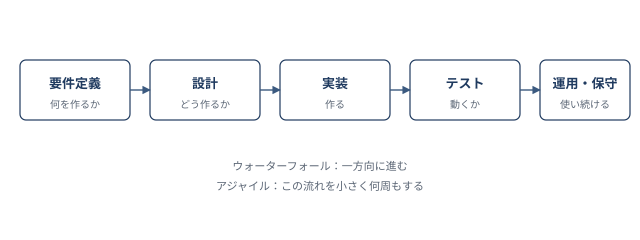

:::chapter-opener
:::chapter-lead
「どう作り、どう回すか」を扱う分野。
時間・品質・人・お金を同時に動かすための知識を身につけます。
:::
:::
:::onepage-map

:::section-intro マネジメント系は、ストラテジで「何のために作るか」が決まったあと、 「どう作り、どう運び、どう改善し続けるか」を扱います。 ここから先は、常に QCD（品質・コスト・納期） の三角形が背景で動いています。 :::
:::misconceptions
:::point-box 要件定義 → 設計 → 実装 → テスト → 運用・保守。 上流にいくほど抽象度が高く、上流のミスは下流では取り返せません。 :::
:::compare-table | 観点 | ウォーターフォール | アジャイル | | :-- | :-- | :-- | | 進め方 | 一方向に一巡 | 小さく何周も | | 強み | 計画しやすい・契約しやすい | 変更に強い・学習が早い | | 弱み | 変更が高価 | 全体の見通しが出にくい | | 向く案件 | 要件が固い | 要件が動く | :::
:::caution-box ### アジャイルは「計画しない」ではない アジャイルは「小さい計画を何度も立てる」やり方です。 スプリントごとに、計画・実装・レビュー・振り返りを必ず回します。 :::
:::compare-table | 制約 | 中身 | 現実の葛藤 | | :-- | :-- | :-- | | Q : 品質 | 要求を満たす度合い | 落とすと手戻り | | C : コスト | 人件費・費用 | 削ると品質に跳ねる | | D : 納期 | スケジュール | 縮めると人・品質に跳ねる | :::
:::exam-trap-box ### スケジュール短縮を問われたら、"QCD の常識" を守る選択肢を選ぶ 計画を短縮する典型解は 「資源の追加でコストを上げてでも納期を守る」。 「機能を増やす」「スコープを広げる」「人を減らす」はすべて、 三制約のバランスを崩す誤答です。 :::
:::compare-table | 用語 | 意味 | 役割 | | :-- | :-- | :-- | | SLA | サービス品質の約束（契約） | 何を守るかを決める | | SLM | SLA を管理し改善する活動 | 守れているかを運用で確認 | :::
:::mini-quiz Q. ウォーターフォールモデルの特徴として最も適切なものはどれか。
::::answer 正解 : 3 1 と 2 はアジャイルの特徴。 ウォーターフォールの本質は「逆流しないこと」にあります。 :::: :::
:::summary-card chapter ### この章のまとめ